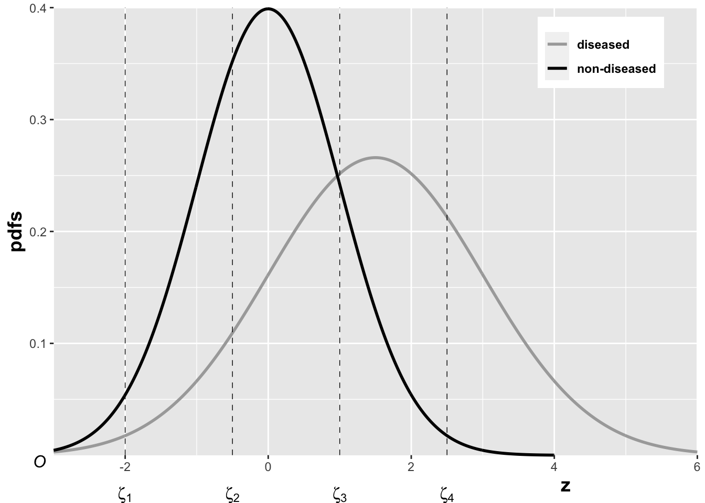
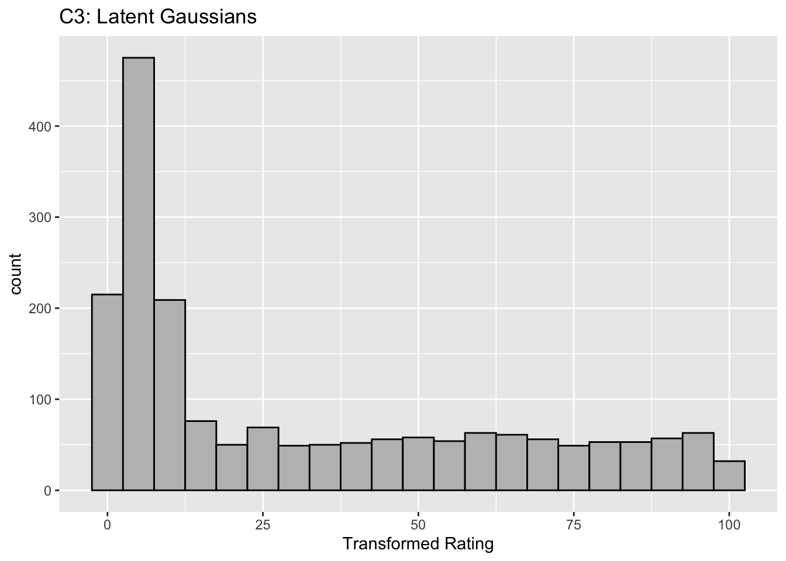

1 Binormal model
1.1 Introduction
The equal variance binormal model was described in Chapter 02. The ratings method of acquiring ROC data and calculation of operating points was discussed in Chapter 04. It was shown, Fig. @ref(fig:ratingsParadigmEqVarFitA), that for a clinical dataset the unequal-variance binormal model visually fitted the data better than the equal-variance binormal model, although how the unequal variance fit was obtained was not discussed. This chapter deals with details of the unequal-variance binormal model, often abbreviated to binormal model, establishes necessary notation, and derives expressions for sensitivity, specificity and the area under the predicted ROC curve).
The binormal model describes univariate datasets, in which there is one ROC rating per case, as in a single observer interpreting cases, one at a time, in a single modality. By convention the qualifier “univariate” is often omitted. In TBA Chapter 21 a bivariate model will be described where each case yields two ratings, as in a single observer interpreting cases in two modalities, or the homologous problem of two observers interpreting cases in a single modality.
The main aim of this chapter is to demystify statistical curve fitting. With the passing of Dorfman, Metz and Swensson, parametric modeling is being neglected. Researchers are instead focusing on non-parametric analysis using the empirical AUC. While useful, empirical AUC yields almost no insight into what is limiting performance. Taking the mystery out of curve fitting will allow the reader to appreciate later chapters that describe more complex fitting methods, which yield important insights into factors limiting performance.
Here is the organization of this chapter. It starts with a description of the binormal model and how it accommodates data binning. An important point, on which there is much confusion, on the invariance of the binormal model to arbitrary monotone transformations of the ratings is explicated with an example. Expressions for sensitivity and specificity are derived. Two notations used to characterize the binormal model are explained. Expressions for the pdfs of the binormal model are derived. A simple linear fitting method is illustrated: this used to be the only recourse a researcher had before Dorfman and Alf’s seminal publication [@RN1081]. The maximum likelihood method for estimating parameters of the binormal model is detailed. Validation of the fitting method is described, i.e., how can one be confident that the fitting method, which makes normality and other assumptions, is valid for a dataset arising from an unknown distribution. The Appendix has a detailed derivation, originally published in a terse paper [@RN2342] on the partial area under the ROC curve. The partial area is defined by the area under the binormal ROC curve from \(FPF = 0\) to \(FPF = c\), where \(0 \leq c \leq 1\). As a special case \(c = 1\) yields the total area under the binormal ROC.
1.2 The binormal model
The unequal-variance binormal model (henceforth abbreviated to binormal model; when the author means equal variances, it will be made explicit) is defined by (capital letters indicate random variables and their lower-case counterparts are actual realized values):
\[\begin{equation} Z_{k_tt}\sim N\left ( \mu_t,\sigma_{t}^{2} \right );t=1,2 (\#eq:BinModZSampling1) \end{equation}\]
where
\[\begin{equation} \mu_1=0;\mu_2=\mu;\sigma_{1}^{2}=1;\sigma_{2}^{2}=\sigma^{2} (\#eq:BinModZSampling2) \end{equation}\]
Eqn. @ref(eq:BinModZSampling1) states that the z-samples for non-diseased cases are distributed as a \(N(0,1)\) distribution, i.e., the unit normal distribution, while the z-samples for diseased cases are distributed as a \(N(\mu,\sigma^2)\) distribution, i.e., a normal distribution with mean \(\mu\) and variance \(\sigma^2\). This is a 2-parameter model of the z-samples, not counting additional threshold parameters needed for data binning.
A more complicated version of this model allows the mean of the non-diseased distribution to be non-zero and its variance different from unity. The 4-parameter model is no more general than the 2-parameter model. The reason is that one is free to transform the decision variable, and associated thresholds, by applying arbitrary monotonic increasing function transformation, which do not change the ordering of the ratings and hence do not change the ROC curve. So if the mean of the noise distribution were non-zero, subtracting this value from all Z-samples would shift the effective mean of the non-diseased distribution to zero (the shifted Z-values are monotonically related to the original values) and the mean of the shifted diseased distribution becomes \(\mu_2-\mu_1\). Next, one scales or divides (division by a positive number is also a monotonic transformation) all the Z-samples by \(\sigma_1\), resulting in the scaled non-diseased distribution having unit variance, and the scaled diseased distribution has mean \(\frac{\mu_2-\mu_1}{\sigma_1}\) and variance \((\frac{\sigma_2}{\sigma_1})^2\). Therefore, if one starts with 4 parameters then one can, by simple shifting and scaling operations, reduce the model to 2 parameters, as in Eqn. @ref(eq:BinModZSampling1). [The author has seen a publication on Bayesian ROC estimation using the four-parameter model.]
1.2.1 Binning the data
In an R-rating ROC study the observed ratings r take on integer values, 1 through R, it being understood that higher ratings correspond to greater confidence for disease. Defining dummy cutoffs \(\zeta_0 = -\infty\) and \(\zeta_R = +\infty\), the binning rule for a case with realized z-sample z is (Chapter @ref(ratingsParadigm), Eqn. @ref(eq:ratingsParadigm-binningRule)):
\[\begin{equation} \text{if} \left (\zeta_{r-1} \le z \le \zeta_r \right )\Rightarrow \text {rating} = r (\#eq:BinModZBinning) \end{equation}\]

In the unequal-variance binormal model, the variance \(\sigma^2\) of the z-samples for diseased cases is allowed to be different from unity. Most ROC datasets are consistent with \(\sigma > 1\). The above figure, generated with \(\mu = 1.5, \sigma = 1.5, \zeta_1 = -2, \zeta_2 = -0.5, \zeta_3 = 1, \zeta_4 = 2.5\), illustrates how realized z-samples are converted to ratings, i.e., application of the binning rule @ref(eq:BinModZBinning). For example, a case with z-sample equal to -2.5 would be rated “1”, and one with z-sample equal to -1 would be rated “2”, cases with z-samples greater than 2.5 would be rated “5”, etc.
1.2.2 Invariance of the binormal model to arbitrary monotone transformations
The binormal model is not as restrictive as might appear at first sight. Any monotone increasing transformation \(Y=f(Z)\) applied to the observed z-samples, and the associated thresholds, will yield the same observed data, e.g., Table @ref(tab:ratingsParadigmExampleTable). This is because such a transformation leaves the ordering of the ratings unaltered and hence results in the same operating points. While the distributions for \(Y\) will not be binormal (i.e., two independent normal distributions), one can safely “pretend” that one is still dealing with an underlying binormal model. An alternative way of stating this is that any pair of distributions is allowed as long as they are reducible to a binormal model form by a monotonic increasing transformation of Y: e.g., \(Z=f^{-1}\). [If \(f\) is a monotone increasing function of its argument, so is \(f^{-1}\)}.] For this reason, the term “pair of latent underlying normal distributions” is sometimes used to describe the binormal model. The robustness of the binormal model has been investigated [@RN1216; @RN100]. The referenced paper by Dorfman et al has an excellent discussion of the robustness of the binormal model.
The robustness of the binormal model, i.e., the flexibility allowed by the infinite choices of monotonic increasing functions, application of each of which leaves the ordering of the data unaltered, is widely misunderstood. The non-Gaussian appearance of histograms of ratings in ROC studies can lead one to incorrect conclusions that the binormal model is inapplicable to these datasets. To quote a reviewer of one of the author’s recent papers:
I have had multiple encounters with statisticians who do not understand this difference…. They show me histograms of data, and tell me that the data is obviously not normal, therefore the binormal model should not be used.
The reviewer is correct. The misconception is illustrated next.
# shows that monotone transformations have no effect on
# AUC even though the pdfs look non-gaussian
# common statistician misconception about ROC analysis
fArray <- c(0.1,0.5,0.9)
seedArray <- c(10,11,12)
for (row in 1:3) {
f <- fArray[row]
seed <- seedArray[row]
set.seed(seed)
# numbers of cases simulated
K1 <- 900
K2 <- 1000
mu1 <- 30
sigma1 <- 7
mu2 <- 55
sigma2 <- 7
# Simulate true gaussian ratings using above parameter values
z1 <- rnorm(K1,mean = mu1,sd = sigma1)
z1[z1>100] <- 100;z1[z1<0] <- 0 # constrain to 0 to 100
z2 <- rnorm(K2,mean = mu2,sd = sigma2)
z2[z2>100] <- 100;z2[z2<0] <- 0 # constrain to 0 to 100
# calculate AUC for true Gaussian ratings
AUC1 <- TrapezoidalArea(z1, z2)
Gaussians <- c(z1, z2)
# display histograms of true Gaussian ratings, A1, A2 or A3
x <- data.frame(x=Gaussians) # line 27
x <-
ggplot(data = x, mapping = aes(x = x)) +
geom_histogram(binwidth = 5, color = "black", fill="grey") +
xlab(label = "Original Rating") +
ggtitle(label = paste0("A", row, ": ", "Gaussians"))
print(x)
z <- seq(0.0, 100, 0.1)
# transform the latent Gaussians to true Gaussians
transformation <-
data.frame(
x = z,
z = Y(z,mu1,mu2,sigma1,sigma2,f))
# display transformation functions, B1, B2 or B3
x <-
ggplot(mapping = aes(x = x, y = z)) +
geom_line(data = transformation, size = 1) +
xlab(label = "Original Rating") +
ylab(label = "Transformed Rating") +
ggtitle(label = paste0("B", row, ": ","Monotone Transformation"))
print(x)
y <- Y(c(z1, z2),mu1,mu2,sigma1,sigma2,f)
y1 <- y[1:K1];y2 <- y[(K1+1):(K1+K2)]
# calculate AUC for transformed ratings
AUC2 <- TrapezoidalArea( y1, y2)
# display histograms of latent Gaussian ratings, C1, C2 or C3
x <- data.frame(x=y)
x <- ggplot(data = x, mapping = aes(x = x)) +
geom_histogram(binwidth = 5, color = "black", fill="grey") +
xlab(label = "Transformed Rating") +
ggtitle(label = paste0("C", row, ": ", "Latent Gaussians"))
print(x)
# print AUCs, note they are identical (for each row)
options(digits = 9)
cat("row =", row, ", seed =", seed, ", f =", f,
"\nAUC of actual Gaussians =", AUC1,
"\nAUC of latent Gaussians =", AUC2, "\n")
}
#> row = 1 , seed = 10 , f = 0.1
#> AUC of actual Gaussians = 0.99308
#> AUC of latent Gaussians = 0.99308
#> row = 2 , seed = 11 , f = 0.5
#> AUC of actual Gaussians = 0.993668889
#> AUC of latent Gaussians = 0.993668889
#> row = 3 , seed = 12 , f = 0.9
#> AUC of actual Gaussians = 0.995041111
#> AUC of latent Gaussians = 0.995041111
Figure captions (A1 - C3): Illustrating the invariance of ROC analysis to arbitrary monotone transformations of the ratings. Each row contains 3 plots: labeled 1, 2 and 3. Each column contains 3 plots labeled A, B and C. So, for example, plot C2 refers to the second row and third column. The for-loop generates the plot one row at a time. Each of the latent Gaussian plots C1, C2 and C3 appears not binormal. However, using the inverse of the monotone transformations shown B1, B2 and B3, they can be transformed to the binormal model histograms A1, A2 and A3. Plot A1 shows the histogram of simulated ratings from a binormal model. Two peaks, one at 30 and the other at 55 are evident (by design, all ratings in this figure are in the range 0 to 100). Plot B1 shows the monotone transformation for \(f = 0.1\). Plot C1 shows the histogram of the transformed rating. The choice of \(f\) leads to a transformed rating histogram that is peaked near the high end of the rating scale. For A1 and C1 the corresponding AUCs are identical (0.993080000). Plot A2 is for a different seed value, plot B2 is the transformation for \(f = 0.5\) and now the transformed histogram is almost flat, plot C2. For plots A2 and C2 the corresponding AUCs are identical (0.993668889). Plot A3 is for a different seed value, B3 is the transformation for \(f = 0.9\) and the transformed histogram C3 is peaked near the low end of the transformed rating scale. For plots A3 and (C3) the corresponding AUCs are identical (0.995041111).
The idea is to simulate continuous ratings data in the range 0 to 100 from a binormal model. \(K_1 = 900\) non-diseased cases are sampled from a Gaussian centered at \(\mu_1\) = 30 and standard deviation \(\sigma_1 = 7\). \(K_2 = 1000\) diseased cases are sampled from a Gaussian centered at \(\mu_2\) = 55 and standard deviation \(\sigma_2\) = 7. The variable \(f\), which is in the range (0,1), controls the shape of the transformed distribution. If \(f\) is small, the transformed distribution will be peaked towards 0 and if \(f\) is unity, it will be peaked at 100. If \(f\) equals 0.5, the transformed distribution is flat. Insight into the reason for this transformation is in [@RN300], Chapter 7: it has to do with transformations of random variables. The transformation function, \(Y(Z)\), implements:
\[\begin{equation} Y\left ( Z \right )=\left [ \left ( 1-f \right )\Phi\left ( \frac{Z-\mu_1}{\sigma_1} \right )+f\Phi\left ( \frac{Z-\mu_2}{\sigma_2} \right ) \right ]100 (\#eq:BinModDemoMisconception) \end{equation}\]
The multiplication by 100 ensures that the transformed variable is in the range 0 to 100 (if not, it is code-constrained to be). The code realizes the random samples, calculates the empirical AUC, displays the histogram of the true binormal samples, plots the transformation function, calculates the empirical AUC using the transformed samples, and plots the histogram of the transformed samples (the latent binormal).
- B1 shows the transformation for \(f = 0.1\). The steep initial rise of the curve has the effect of flattening the histogram of the transformed ratings at the low end of the rating scale, C1. Conversely, the flat nature of the curve near upper end of the rating range has the effect of causing the histogram of the transformed variable to peak in that range.
- B2 shows the transformation for \(f = 0.5\). This time the latent rating histogram, C2, is almost flat over the entire range, definitely not visually binormal.
- B3 shows the transformation for \(f = 0.9\). This time the transformed rating histogram, C3, is peaked at the low end of the transformed rating scale.
- The output lists the values of the seed variable and the value of the shape parameter \(f\). For each value of seed and the shape parameter, the AUCs of the actual Gaussians and the transformed variables are identical.
- The values of the parameters were chosen to best illustrate the true binormal nature of the plots A2 and A3. This has the effect of making the AUCs close to unity.
The histograms in C1, C2 and C3 appear to be non-Gaussian. The corresponding non-diseased and diseased ratings will fail tests of normality. [Showing this is left as an exercise for the reader.] Nevertheless, they are latent Gaussians in the sense that the inverses of the transformations shown in B1, B2 and B3 will yield histograms that are strictly binormal, i.e., A1, A2 and A3. By appropriate changes to the monotone transformation function, the histograms shown in C1, C2 and C3 can be made to resemble a wide variety of shapes, for example, quasi-bimodal (don’t confuse bimodal with binormal) histograms.]
Visual examination of the shape of the histograms of ratings, or standard tests for normality, yield little, if any, insight into whether the underlying binormal model assumptions are being violated.
1.2.3 Expressions for sensitivity and specificity
Let \(Z_t\) denote the random z-sample for truth state \(t\) (\(t\) = 1 for non-diseased and \(t\) = 2 for diseased cases). Since the distribution of z-samples from disease-free cases is \(N(0,1)\), the expression for specificity, Chapter “Modeling Binary Paradigm”, Eqn. 3.13, applies. It is reproduced below:
\[\begin{equation} Sp\left ( \zeta \right )=P\left ( Z_1 < \zeta \right )=\Phi\left ( \zeta \right ) (\#eq:BinModSp) \end{equation}\]
To obtain an expression for sensitivity, consider that for truth state \(t = 2\), the random variable \(\frac{Z_2-\mu}{\sigma}\) is distributed as \(N(0,1)\):
\[\begin{equation*} \frac{Z_2-\mu}{\sigma}\sim N\left ( 0,1 \right ) \end{equation*}\]
Sensitivity is \(P\left ( Z_2 > \zeta \right )\), which implies, because \(\sigma\) is positive (subtract \(\mu\) from both sides of the “greater than” symbol and divide by \(\sigma\)):
\[\begin{equation} Se\left ( \zeta | \mu, \sigma \right )= P\left ( Z_2 > \zeta \right )=P\left ( \frac{Z_2-\mu}{\sigma} > \frac{\zeta-\mu}{\sigma} \right ) (\#eq:BinModSe) \end{equation}\]
The right-hand-side can be rewritten as follows:
\[\begin{equation*} Se\left ( \zeta | \mu, \sigma \right )= 1 - P\left ( \frac{Z_2-\mu}{\sigma} \leq \frac{\zeta-\mu}{\sigma} \right )\\ =1-\Phi\left ( \frac{\zeta-\mu}{\sigma}\right )=\Phi\left ( \frac{\mu-\zeta}{\sigma}\right ) \end{equation*}\]
Summarizing, the formulae for the specificity and sensitivity for the binormal model are:
\[\begin{equation} Sp\left ( \zeta \right ) = \Phi\left ( \zeta \right )\\ Se\left ( \zeta | \mu, \sigma \right ) = \Phi\left ( \frac{\mu-\zeta}{\sigma}\right ) (\#eq:BinModSeSp) \end{equation}\]
The coordinates of the operating point defined by \(\zeta\) are given by:
\[\begin{equation} FPF\left ( \zeta \right ) = 1 - Sp\left ( \zeta \right ) = 1 - \Phi\left ( \zeta \right ) = \Phi\left ( -\zeta \right ) (\#eq:BinModFPF) \end{equation}\]
\[\begin{equation} TPF\left ( \zeta | \mu, \sigma \right ) = \Phi\left ( \frac{\mu-\zeta}{\sigma} \right ) (\#eq:BinModTPF) \end{equation}\]
These expressions allow calculation of the operating point for any \(\zeta\). An equation for a curve is usually expressed as \(y=f(x)\). An expression of this form for the ROC curve, i.e., the y coordinate (TPF) expressed as a function of the x coordinate (FPF), follows upon inversion of the expression for FPF, Eqn. @ref(eq:BinModFPF):
\[\begin{equation} \zeta = -\Phi^{-1}\left ( FPF \right ) (\#eq:BinModZeta) \end{equation}\]
Substitution of Eqn. @ref(eq:BinModZeta) in Eqn. @ref(eq:BinModTPF) yields:
\[\begin{equation} TPF = \Phi\left ( \frac{\mu + \Phi^{-1}\left (FPF \right )}{\sigma} \right ) (\#eq:BinModRocCurve1) \end{equation}\]
This equation gives the dependence of TPF on FPF, i.e., the equation for the ROC curve. It will be put into standard notation next.
1.2.4 Binormal model in standard notation
The following notation is widely used in the literature:
\[\begin{equation} a=\frac{\mu}{\sigma};b=\frac{1}{\sigma} (\#eq:BinModabParameters) \end{equation}\]
The reason for the \((a,b)\) instead of the \((\mu,\sigma)\) notation is that Dorfman and Alf assumed, in their seminal paper [@RN1081], that the diseased distribution (signal distribution in signal detection theory) had unit variance, and the non-diseased distribution (noise) had standard deviation \(b\) (\(b > 0\)) or variance \(b^2\), and that the separation of the two distributions was \(a\), see figure below. In this example: \(a = 1.11\) and \(b = 0.556\), corresponding to \(\mu = 2\) and \(\sigma = 1.8\). Dorfman and Alf’s fundamental contribution, namely estimating these parameters from ratings data, to be described below, led to the widespread usage of the \((a,b)\) parameters estimated by their software (RSCORE), and its newer variants (e.g., RSCORE–II, ROCFIT and ROCKIT).
By dividing the z-samples by \(b\), the variance of the distribution labeled “Noise” becomes unity, its mean stays at zero, and the variance of the distribution labeled “Signal” becomes \(1/b\), and its mean becomes \(a/b\), as shown below. It illustrates that the inverses of Eqn. @ref(eq:BinModabParameters) are:
\[\begin{equation} \mu=\frac{a}{b};\sigma=\frac{1}{b} (\#eq:BinModabParametersInv) \end{equation}\]
Eqns. @ref(eq:BinModabParameters) and @ref(eq:BinModabParametersInv) allow conversion from one notation to another.

(#fig:BinMod-ab2-mu-sigma)The left plot shows the definitions of the (a,b) parameters of the binormal model. In the right plot the x-axis has been rescaled so that the noise distribution has unit variance, thereby illustrations between (a,b) and the (\(\mu,\sigma\)) parameters.
1.2.5 Properties of the binormal model ROC curve
Using the \((a,b)\) notation, Eqn. @ref(eq:BinModRocCurve1) for the ROC curve reduces to:
\[\begin{equation} TPF = \Phi\left ( a+ b \Phi^{-1}\left (FPF \right ) \right ) (\#eq:BinModRocCurve) \end{equation}\]
Since \(\Phi^{-1}(FPF)\) is an increasing function of its argument \(FPF\), and \(b > 0\), the argument of the \(\Phi\) function is an increasing function of \(FPF\). Since \(\Phi\) is a monotonically increasing function of its argument, \(TPF\) is a monotonically increasing function of \(FPF\). This is true regardless of the sign of \(a\). If \(FPF = 0\), then \(\Phi^{-1}(0) = -\infty\) and \(TPF = 0\). If \(FPF = 1\), then \(\Phi^{-1}(1) = +\infty\) and \(TPF = 1\). Regardless of the value of \(a\), as long as \(b \ge 0\), the ROC curve starts at (0,0) and increases monotonically ending at (1,1).
From Eqn. @ref(eq:BinModFPF) and Eqn. @ref(eq:BinModTPF), the expressions for \(FPF\) and \(TPF\) in terms of model parameters \((a,b)\) are:
\[\begin{equation} \left. \begin{aligned} FPF\left ( \zeta \right ) &= \Phi\left ( -\zeta \right )\\ TPF &= \Phi\left ( a - b \zeta \right ) \end{aligned} \right \} (\#eq:BinModFPF-TPF-ab) \end{equation}\]
1.2.6 Density functions (pdfs) of the binormal model
According to Eqn. @ref(eq:BinModZSampling1) the probability that a z-sample is smaller than a specified threshold \(\zeta\), i.e., the CDF function, is:
\[\begin{equation*} P\left ( Z \le \zeta \mid Z\sim N\left ( 0,1 \right ) \right ) = 1-FPF\left ( \zeta \right ) = \Phi \left ( \zeta \right ) \end{equation*}\]
\[\begin{equation*} P\left ( Z \le \zeta \mid Z\sim N\left ( \mu,\sigma^2 \right ) \right ) = 1-TPF\left ( \zeta \right ) = \Phi \left ( \frac{\zeta - \mu}{\sigma} \right ) \end{equation*}\]
Since the pdf is the derivative of the corresponding CDF function, it follows that (the subscripts N and D denote non-diseased and diseased cases, respectively):
\[\begin{equation*} pdf_N\left ( \zeta \right ) = \frac{\partial \Phi\left ( \zeta \right )}{\partial \zeta} = \phi\left ( \zeta \right ) \equiv \frac{1}{\sqrt{2 \pi}}\exp\left ( -\frac{\zeta^2}{2} \right ) \end{equation*}\]
\[\begin{equation*} pdf_D\left ( \zeta \right ) = \frac{\partial \Phi\left ( \frac{\zeta - \mu}{\sigma} \right )}{\partial \zeta} = \frac{1}{\sigma} \phi\left ( \frac{\zeta - \mu}{\sigma} \right ) \equiv \frac{1}{\sqrt{2 \pi}\sigma}\exp\left ( -\frac{\left (\zeta-\mu \right )^2}{2\sigma} \right ) \end{equation*}\]
The second equation can be written in \((a,b)\) notation as:
\[\begin{equation*} pdf_D\left ( \zeta \right ) = b\phi\left ( b\zeta-a \right ) = \frac{b}{\sqrt{2 \pi}}\exp\left ( -\frac{\left (b\zeta - a \right )^2}{2} \right ) \end{equation*}\]
1.3 Fitting an ROC curve to data points
1.3.1 A JAVA fitted ROC curve
This section, described in the physical book, has been abbreviated to the relevant website.
1.3.2 A simplistic straight line fit to the ROC curve
To be described next is a method for fitting data such as in Table @ref(tab:ratingsParadigmExampleTable) to the binormal model, i.e., determining the parameters \((a,b)\) and the thresholds \(\zeta_r , \quad r = 1, 2, ..., R-1\), to best fit, in some to-be-defined sense, the observed cell counts. The most common method uses an algorithm called maximum likelihood. But before getting to that, I describe the least-square method, which is conceptually simpler, but not really applicable, as will be explained shortly.
1.3.2.1 Least-squares estimation
By applying the function \(\Phi^{-1}\) to both sides of Eqn. @ref(eq:BinModRocCurve1), one gets (the “inverse” function cancels the “forward” function on the right hand side):
\[\begin{equation*} \Phi^{-1}\left ( TPF \right ) = a + b \Phi^{-1}\left ( FPF \right ) \end{equation*}\]
This suggests that a plot of \(y = \Phi^{-1}\left ( TPF \right )\) vs. \(x=\Phi^{-1}\left ( FPF \right )\) is expected to follow a straight line with slope \(b\) and intercept \(a\). Fitting a straight line to such data is generally performed by the method of least-squares, a capability present in most software packages and spreadsheets. Alternatively, one can simply visually draw the best straight line that fits the points, memorably referred to [@RN300] as “chi-by-eye”. This was the way parameters of the binormal model were estimated prior to Dorfman and Alf’s work [@RN1081]. The least-squares method is a quantitative way of accomplishing the same aim. If \(\left ( x_t,y_t \right )\) are the data points, one constructs \(S\), the sum of the squared deviations of the observed ordinates from the predicted values (since \(R\) is the number of ratings bins, the summation runs over the \(R-1\) operating points):
\[\begin{equation*} S = \sum_{i=1}^{R-1}\left ( y_i - \left ( a + bx_i \right ) \right )^2 \end{equation*}\]
The idea is to minimize S with respect to the parameters \((a,b)\). One approach is to differentiate this with respect to \(a\) and \(b\) and equate each resulting derivate expression to zero. This yields two equations in two unknowns, which are solved for \(a\) and \(b\). If the reader has never done this before, one should go through these steps at least once, but it would be smarter in future to use software that does all this. In R the least-squares fitting function is lm(y~x), which in its simplest form fits a linear model lm(y~x) using the method of least-squares (in case you are wondering lm stands for linear model, a whole branch of statistics in itself; in this example one is using its simplest capability).
# ML estimates of a and b (from Eng JAVA program)
# a <- 1.3204; b <- 0.6075
# # these are not used in program; just here for comparison
FPF <- c(0.017, 0.050, 0.183, 0.5)
# this is from Table 6.11, last two rows
TPF <- c(0.440, 0.680, 0.780, 0.900)
# ...do...
PhiInvFPF <- qnorm(FPF)
# apply the PHI_INV function
PhiInvTPF <- qnorm(TPF)
# ... do ...
fit <- lm(PhiInvTPF~PhiInvFPF)
print(fit)
#>
#> Call:
#> lm(formula = PhiInvTPF ~ PhiInvFPF)
#>
#> Coefficients:
#> (Intercept) PhiInvFPF
#> 1.328844 0.630746
(#fig:BinModStraightLineFit)The straight line fit method of estimating parameters of the fitting model.
Fig. @ref(fig:BinModStraightLineFit) shows operating points from Table @ref(tab:ratingsParadigmExampleTable), transformed by the \(\Phi^{-1}\) function; the slope of the line is the least-squares estimate of the \(b\) parameter and the intercept is the corresponding \(a\) parameter of the binormal model.
The last line contains the least squares estimated values, \(a\) = 1.3288 and \(b\) = 0.6307. The corresponding maximum likelihood estimates of these parameters, as yielded by the Eng web code, Appendix B, are listed in line 4 of the main program: \(a\) = 1.3204 and \(b\) = 0.6075. The estimates appear to be close, particularly the estimate of \(a\) , but there are a few things wrong with the least-squares approach. First, the method of least squares assumes that the data points are independent. Because of the manner in which they are constructed, namely by cumulating points, the independence assumption is not valid for ROC operating points. Cumulating the 4 and 5 responses constrains the resulting operating point to be above and to the right of the point obtained by cumulating the 5 responses only, so the data points are definitely not independent. Similarly, cumulating the 3, 4 and 5 responses constrains the resulting operating point to be above and to the right of the point obtained by cumulating the 4 and 5 responses, and so on. The second problem is the linear least-squares method assumes there is no error in measuring x; the only source of error that is accounted for is in the y-coordinate. In fact, both coordinates of an ROC operating point are subject to sampling error. Third, disregard of error in the x-direction is further implicit in the estimates of the thresholds, which according to Eqn. (6.2.19), is given by:
\[\begin{equation*} \zeta_r = - \Phi^{-1}\left ( FPF_r \right ) \end{equation*}\]
These are “rigid” estimates that assume no error in the FPF values. As was shown in Chapter @ref(binaryTask), 95% confidence intervals apply to these estimates.
A historical note: prior to computers and easy access to statistical functions the analyst had to use a special plotting paper, termed “double probability paper”, that converted probabilities into x and y distances using the inverse function.
1.3.3 Maximum likelihood estimation (MLE)
The approach taken by Dorfman and Alf was to maximize the likelihood function instead of S. The likelihood function is the probability of the observed data given a set of parameter values, i.e.,
\[\begin{equation*} \text {L} \equiv P\left ( data \mid \text {parameters} \right ) \end{equation*}\]
Generally “data” is suppressed, so likelihood is a function of the parameters; but “data” is always implicit. With reference to Fig. 6.1, the probability of a non-diseased case yielding a count in the 2nd bin equals the area under the curve labeled “Noise” bounded by the vertical lines at \(\zeta_1\) and \(\zeta_2\). In general, the probability of a non-diseased case yielding a count in the \(r^\text{th}\) bin equals the area under the curve labeled “Noise” bounded by the vertical lines at \(\zeta_{r-1}\) and \(\zeta_r\). Since the area to the left of a threshold is the CDF corresponding to that threshold, the required probability is \(\Phi\left ( \zeta_r \right ) - \Phi\left ( \zeta_{r-1} \right )\); we are simply subtracting two expressions for specificity, Eqn. (6.2.5).
\[\begin{equation*} \text {count in non-diseased bin } r = \Phi\left ( \zeta_r \right ) - \Phi\left ( \zeta_{r-1} \right ) \end{equation*}\]
Similarly, the probability of a diseased case yielding a count in the rth bin equals the area under the curve labeled “Signal” bounded by the vertical lines at \(\zeta_{r-1}\) and \(\zeta_r\). The area under the diseased distribution to the left of threshold \(\zeta_r\) is the \(1 - TPF\) at that threshold:
\[\begin{equation*} 1 - \Phi\left ( \frac{\mu-\zeta_r}{\sigma} \right ) = \Phi\left ( \frac{\zeta_r - \mu}{\sigma} \right ) \end{equation*}\]
The area between the two thresholds is:
\[\begin{align*} P\left ( \text{count in diseased bin }r \right ) &= \Phi\left ( \frac{\zeta_r - \mu}{\sigma} \right ) - \Phi\left ( \frac{\zeta_{r-1} - \mu}{\sigma} \right ) \\ &= \Phi\left ( b\zeta_r-a \right ) - \Phi\left ( b\zeta_{r-1}-a \right ) \end{align*}\]
Let \(K_{1r}\) denote the number of non-diseased cases in the rth bin, and \(K_{2r}\) denotes the number of diseased cases in the rth bin. Consider the number of counts \(K_{1r}\) in non-diseased case bin \(r\). Since the probability of each count is \(\Phi\left ( \zeta_{r+1} \right ) - \Phi\left ( \zeta_r \right )\), the probability of the observed number of counts, assuming the counts are independent, is \({\left(\Phi\left ( \zeta_{r+1} \right ) - \Phi\left ( \zeta_r \right ) \right )}^{K_{1r}}\). Similarly, the probability of observing counts in diseased case bin \(r\) is \({\left (\Phi\left ( b\zeta_{r+1}-a \right ) - \Phi\left ( b\zeta_r-a \right ) \right )}^{K_{2r}}\), subject to the same independence assumption. The probability of simultaneously observing \(K_{1r}\) counts in non-diseased case bin r and \(K_{2r}\) counts in diseased case bin \(r\) is the product of these individual probabilities (again, an independence assumption is being used):
\[\begin{equation*} \left (\Phi\left ( \zeta_{r+1} \right ) - \Phi\left ( \zeta_r \right ) \right )^{K_{1r}} \left (\Phi\left ( b\zeta_{r+1}-a \right ) - \Phi\left ( b\zeta_r-a \right ) \right )^{K_{2r}} \end{equation*}\]
Similar expressions apply for all integer values of \(r\) ranging from \(1,2,...,R\). Therefore the probability of observing the entire data set is the product of expressions like Eqn. (6.4.5), over all values of \(r\):
\[\begin{equation} \prod_{r=1}^{R}\left [\left (\Phi\left ( \zeta_{r+1} \right ) - \Phi\left ( \zeta_r \right ) \right )^{K_{1r}} \left (\Phi\left ( b\zeta_{r+1}-a \right ) - \Phi\left ( b\zeta_r-a \right ) \right )^{K_{2r}} \right ] (\#eq:BinModProductProb) \end{equation}\]
We are almost there. A specific combination of \(K_{11},K_{12},...,K_{1R}\) counts from \(K_1\) non-diseased cases and counts \(K_{21},K_{22},...,K_{2R}\) from \(K_2\) diseased cases can occur the following number of times (given by the multinomial factor shown below):
\[\begin{equation} \frac{K_1!}{\prod_{r=1}^{R}K_{1r}!}\frac{K_2!}{\prod_{r=1}^{R}K_{2r}!} (\#eq:BinModCombFactor) \end{equation}\]
The likelihood function is the product of Eqn. @ref(eq:BinModProductProb) and Eqn. @ref(eq:BinModCombFactor):
\[\begin{equation} \begin{split} L\left ( a,b,\overrightarrow{\zeta} \right ) &= \left (\frac{K_1!}{\prod_{r=1}^{R}K_{1r}!}\frac{K_2!}{\prod_{r=1}^{R}K_{2r}!} \right ) \times \\ &\quad\prod_{r=1}^{R}\left [\left (\Phi\left ( \zeta_{r+1} \right ) - \Phi\left ( \zeta_r \right ) \right )^{K_{1r}} \left (\Phi\left ( b\zeta_{r+1}-a \right ) - \Phi\left ( b\zeta_r-a \right ) \right )^{K_{2r}} \right ] \end{split} (\#eq:BinModLikelihood) \end{equation}\]
The left hand side of Eqn. @ref(eq:BinModLikelihood) shows explicitly the dependence of the likelihood function on the parameters of the model, namely \(a,b,\overrightarrow{\zeta}\), where the vector of thresholds \(\overrightarrow{\zeta}\) is a compact notation for the set of thresholds \(\zeta_1,\zeta_2,...,\zeta_R\), (note that since \(\zeta_0 = -\infty\), and \(\zeta_R = +\infty\), only \(R-1\) free threshold parameters are involved, and the total number of free parameters in the model is \(R+1\)). For example, for a 5-rating ROC study, the total number of free parameters is 6, i.e., \(a\), \(b\) and 4 thresholds \(\zeta_1,\zeta_2,\zeta_3,\zeta_4\).
Eqn. @ref(eq:BinModLikelihood) is forbidding but here comes a simplification. The difference of probabilities such as \(\Phi\left ( \zeta_r \right )-\Phi\left ( \zeta_{r-1} \right )\) is guaranteed to be positive and less than one [the \(\Phi\) function is a probability, i.e., in the range 0 to 1, and since \(\zeta_r\) is greater than \(\zeta_{r-1}\), the difference is positive and less than one]. When the difference is raised to the power of \(K_{1r}\) (a non-negative integer) a very small number can result. Multiplication of all these small numbers may result in an even smaller number, which may be too small to be represented as a floating-point value, especially as the number of counts increases. To prevent this we resort to a trick. Instead of maximizing the likelihood function \(L\left ( a,b,\overrightarrow{\zeta} \right )\) we choose to maximize the logarithm of the likelihood function (the base of the logarithm is immaterial). The logarithm of the likelihood function is:
\[\begin{equation} LL\left ( a,b,\overrightarrow{\zeta} \right )=\log \left ( L\left ( a,b,\overrightarrow{\zeta} \right ) \right ) (\#eq:BinModLogLikelihood) \end{equation}\]
Since the logarithm is a monotonically increasing function of its argument, maximizing the logarithm of the likelihood function is equivalent to maximizing the likelihood function. Taking the logarithm converts the product symbols in Eqn. (6.4.8) to summations, so instead of multiplying small numbers one is adding them, thereby avoiding underflow errors. Another simplification is that one can ignore the logarithm of the multinomial factor involving the factorials, because these do not depend on the parameters of the model. Putting all this together, we get the following expression for the logarithm of the likelihood function:
\[\begin{equation} \begin{split} LL\left ( a,b,\overrightarrow{\zeta} \right ) \propto& \sum_{r=1}^{R} K_{1r}\log \left ( \Phi\left ( \zeta_{r+1} \right ) - \Phi\left ( \zeta_r \right ) \right ) \\ &+ \sum_{r=1}^{R} K_{2r}\log \left ( \Phi\left (b \zeta_{r+1} - a \right ) - \Phi\left ( b \zeta_r - a \right ) \right ) \end{split} (\#eq:BinModLL) \end{equation}\]
The left hand side of Eqn. @ref(eq:BinModLL) is a function of the model parameters \(a,b,\overrightarrow{\zeta}\) and the observed data, the latter being the counts contained in the vectors \(\overrightarrow{K_1}\) and \(\overrightarrow{K_2}\), where the vector notation is used as a compact form for the counts \(K_{11},K_{12},...,K_{1R}\) and \(K_{21},K_{22},...,K_{2R}\), respectively. The right hand side of Eqn. @ref(eq:BinModLL) is monotonically related to the probability of observing the data given the model parameters \(a,b,\overrightarrow{\zeta}\). If the choice of model parameters is poor, then the probability of observing the data will be small and log likelihood will be small. With a better choice of model parameters the probability and log likelihood will increase. With optimal choice of model parameters the probability and log likelihood will be maximized, and the corresponding optimal values of the model parameters are called maximum likelihood estimates (MLEs). These are the estimates produced by the programs RSCORE and ROCFIT.
1.3.4 Code implementing MLE
# ML estimates of a and b (from Eng JAVA program)
# a <- 1.3204; b <- 0.6075
# these are not used in program; just there for comparison
K1t <- c(30, 19, 8, 2, 1)
K2t <- c(5, 6, 5, 12, 22)
dataset <- Df2RJafrocDataset(K1t, K2t, InputIsCountsTable = TRUE)
retFit <- FitBinormalRoc(dataset)
retFit[1:5]
#> $a
#> [1] 1.32045261
#>
#> $b
#> [1] 0.607492932
#>
#> $zetas
#> zetaFwd1 zetaFwd2 zetaFwd3 zetaFwd4
#> 0.00768054675 0.89627306763 1.51564784976 2.39672209865
#>
#> $AUC
#> [1] 0.870452157
#>
#> $StdAUC
#> [,1]
#> [1,] 0.0379042262
print(retFit$fittedPlot)Note the usage of the RJafroc package [@R-RJafroc]. Specifically, the function FitBinormalRoc. The ratings table is converted to an RJafroc dataset object, followed by application of the fitting function. The results, contained in retFit should be compared to those obtained from the website implementation of ROCFIT.
1.3.5 Validating the fitting model
The above ROC curve is a good visual fit to the observed operating points. Quantification of the validity of the fitting model is accomplished by calculating the Pearson goodness-of-fit test [@RN2656], also known as the chi-square test, which uses the statistic defined by [@RN1492]:
\[\begin{equation} C^2=\sum_{t=1}^{2}\sum_{r=1}^{R}\frac{\left (K_{tr}-\left \langle K_{tr} \right \rangle \right )^2}{\left \langle K_{tr} \right \rangle}\\ K_{tr} \geq 5 (\#eq:BinModGoodnessFit) \end{equation}\]
The expected values are given by:
\[\begin{equation} \begin{split} \left \langle K_{1r} \right \rangle &=K_1\left ( \Phi\left ( \zeta_{r+1} \right ) - \Phi\left ( \zeta_r \right ) \right ) \\ \left \langle K_{2r} \right \rangle &=K_2\left ( \Phi\left ( a\zeta_{r+1}-b \right ) - \Phi\left ( a\zeta_r - b\right ) \right ) \end{split} (\#eq:BinModGoodnessFitExpVals) \end{equation}\]
These expressions should make sense: the difference between the two CDF functions is the probability of a count in the specified bin, and multiplication by the total number of relevant cases should yield the expected counts (a non-integer).
It can be shown that under the null hypothesis that the assumed probability distribution functions for the counts equals the true probability distributions, i.e., the model is valid, the statistic \(C^2\) is distributed as:
\[\begin{equation} C^2\sim \chi_{df}^{2} (\#eq:BinModGoodnessFitDistr) \end{equation}\]
Here \(C^2\sim \chi_{df}^{2}\) is the chi-square distribution with degrees of freedom df defined by:
\[\begin{equation} df=\left ( R-1 \right )+\left ( R-1 \right )-\left (2+ R-1 \right )=\left ( R-3 \right ) (\#eq:BinModGoodnessFitdf) \end{equation}\]
The right hand side of the above equation has been written in an expansive form to illustrate the general rule: for \(R\) non-diseased cells in the ratings table, the degree of freedom is \(R-1\): this is because when all but one cells are specified, the last is determined, because they must sum to \(K_1\) . Similarly, the degree of freedom for the diseased cells is also \(R-1\). Last, we need to subtract the number of free parameters in the model, which is \((2+R-1)\), i.e., the \(a,b\) parameters and the \(R-1\) thresholds. It is evident that if \(R = 3\) then \(df = 0\). In this situation, there are only two non-trivial operating points and the straight-line fit shown will pass through both of them. With two basic parameters, fitting two points is trivial, and goodness of fit cannot be calculated.
Under the null hypothesis (i.e., model is valid) \(C^2\) is distributed as \(\chi_{df}^{2}\). Therefore, one computes the probability that this statistic is larger than the observed value, called the p-value. If this probability is very small, that means that the deviations of the observed values of the cell counts from the expected values are so large that it is unlikely that the model is correct. The degree of unlikeliness is quantified by the p-value. Poor fits lead to small p values.
At the 5% significance level, one concludes that the fit is not good if \(p < 0.05\). In practice one occasionally accepts smaller values of \(p\), \(p > 0.001\) before completely abandoning a model. It is known that adoption of a stricter criterion, e.g., \(p > 0.05\), can occasionally lead to rejection of a retrospectively valid model [@RN300].
1.3.6 Estimating the covariance matrix
TBA See book chapter 6.4.3. This is implemented in RJafroc.
1.3.7 Estimating the variance of Az
TBA See book chapter 6.4.4. This is implemented in RJafroc.
1.3.8 Single FOM derived from ROC curve
Sensitivity and specificity are dual measures of overall performance. It is hard to unambiguosly compare two systems usng dual measures. What if sensitivity is higher for one system but specificity is higher for another. This is, of course, a consequence of sensitivity/specificity depending on the position of the operating point on the ROC curve. Desirable is a single measure of performance that takes into account performance over the entire ROC curve. Two commonly used measures are the binormla model predicted area \(A_z\) under the ROC curve, and the \(d'\) index.
TBA (Book) Appendix 6.A derives the formula for the partial area under the unequal-variance binormal model. A special case of this formula is the area under the whole ROC curve, reproduced below using both parameterizations of the model:
\[\begin{equation} A_z=\Phi\left ( \frac{a}{\sqrt{1+b^2}} \right )=\Phi\left ( \frac{\mu}{\sqrt{1+\sigma^2}} \right ) (\#eq:BinModab2Az) \end{equation}\]
The binormal fitted AUC increases as \(a\) increases or as \(b\) decreases. Equivalently, it increases as \(\mu\) increases or as \(\sigma\) decreases. An equivalent \(d'\) parameter is defined as the separation of two unit-variance normal distributions yielding the same AUC as that predicted by the \((a,b)\) parameter binormal model. It is defined by:
\[\begin{equation} d'=\sqrt{2}\Phi^{-1}\left ( A_z \right ) (\#eq:BinModab2dprime) \end{equation}\]
1.4 Discussion
The binormal model is historically very important and the contribution by Dorfman and Alf [@RN1081] was seminal. Prior to their work, there was no valid way of estimating AUC from observed ratings counts. Their work and a key paper [@RN1487] accelerated research using ROC methods. The number of publications using their algorithm, and the more modern versions developed by Metz and colleagues, is probably well in excess of 500. Because of its key role, the author has endeavored to take out some of the mystery about how the binormal model parameters are estimated. In particular, a common misunderstanding that the binormal model assumptions are violated by real datasets, when in fact it is quite robust to apparent deviations from normality, is addressed.
A good understanding of this chapter should enable the reader to better understand alternative ROC models, discussed later.
It has been stated that the b-parameter of the binormal model is generally observed to be less than one, consistent with the diseased distribution being wider than the non-diseased one. The ROC literature is largely silent on the reason for this finding. One reason, namely location uncertainty, is presented in Chapter “Predictions of the RSM”, where RSM stands for Radiological Search Model. Basically, if the location of the lesion is unknown, then z-samples from diseased cases can be of two types, samples from the correct lesion location, or samples from other non-lesion locations. The resulting mixture distribution will then appear to have larger variance than the corresponding samples from non-diseased cases. This type of mixing need not be restricted to location uncertainty. Even is location is known, if the lesions are non-homogenous (e.g., they contain a range of contrasts) then a similar mixture-distribution induced broadening is expected. The contaminated binormal model (CBM) - see Chapter TBA - also predicts that the diseased distribution is wider than the non-diseased one.
The fact that the b-parameter is less than unity implies that the predicted ROC curve is improper, meaning its slope is not monotone decreasing as the operating point moves up the curve. The result is that a portion of the curve, near (1,1) that crosses the chance-diagonal and hooks upward approaching (1,1) with infinite slope. Ways of fitting proper ROC curves are described in Chapter “Other proper ROC models”. Usually the hook is not readily visible, which has been used as an excuse to ignore the problem. For example, in Fig. 6.4, one would have to “zoom-in” on the upper right corner to see it, but the reader should make no mistake about it, the hook is there as .
A recent example is Fig. 1 in the publication resulting from the Digital Mammographic Imaging Screening Trial (DMIST) clinical trial [@RN1784] involving 49,528 asymptomatic women from 33 clinical sites and involving 153 radiologists, where each of the film modality ROC plots crosses the chance diagonal and hooks upwards to (1,1), which as is known, results anytime \(b <1\).
The unphysical nature of the hook (predicting worse than chance-level performance for supposedly expert readers) is not the only reason for seeking alternate ROC models. The binormal model is susceptible to degeneracy problems. If the dataset does not provide any interior operating points (i.e., all observed points lie on the axes defined by FPF = 0 or TPF = 1) then the model fits these points with b = 0. The resulting straight-line segment fits do not make physical sense. These problems are addressed by the contaminated binormal model16 to be discussed in Chapter “Other proper ROC models”. The first paper in the series has particularly readable accounts of data degeneracy.
To this day the binormal model is widely used to fit ROC datasets. In spite of its limitations, the binormal model has been very useful in bringing a level of quantification to this field that did not exist prior to [@RN1081].